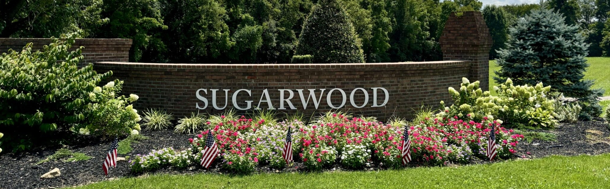

About
A connected Farragut community with shared spaces, long roots, and room to get involved.

Established, convenient, and community-minded
Sugarwood is a community in the heart of Farragut. Conveniently located off Kingston Pike, it is close to the amenities of West Knoxville while maintaining a quiet neighborhood setting.
Neighborhood amenities include a large community swimming pool and kiddie pool with certified lifeguards, two tennis courts, basketball court, fire pit and grill area, and an outdoor pavilion.
Residents can volunteer, participate in meetings, and help strengthen relationships across the neighborhood.
Learn more about Farragut
Niche's 2026 rankings list Farragut as the #1 Best Place to Live in the Knoxville area and #1 for Places with the Best Public Schools in Knox County. Sugarwood is also close to Turkey Creek for shopping, dining, and entertainment, and directly across Kingston Pike from the public Willow Creek Golf Club.
Shared stewardship
Care & maintenance
Annual homeowner fees are used for the maintenance, repair, replacement, and improvement of common properties.
Reasonable reserves
The public site says fees also support a reasonable reserve fund and other common expenses.
Neighbors helping neighbors
Volunteer opportunities and monthly board meetings give residents ways to participate in community life.
Annual fee: The amount is determined and levied annually by the Homeowners Association. No current dollar amount is published on the public site.